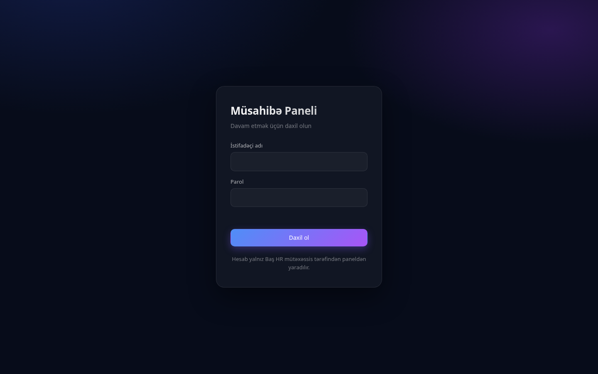
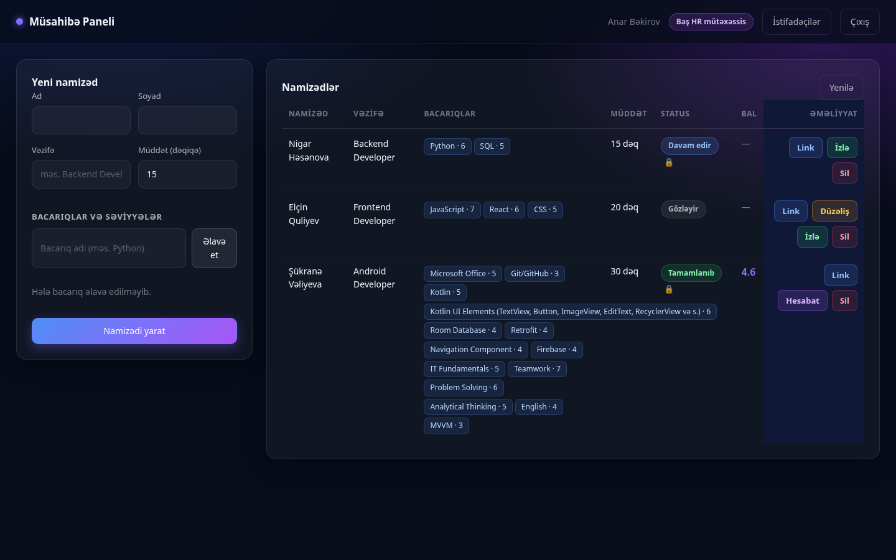
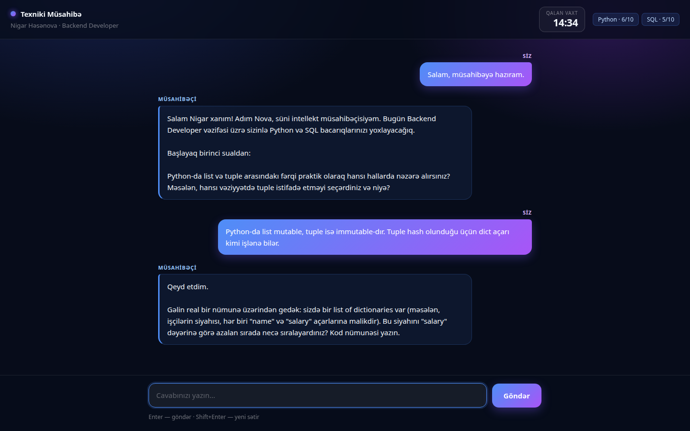
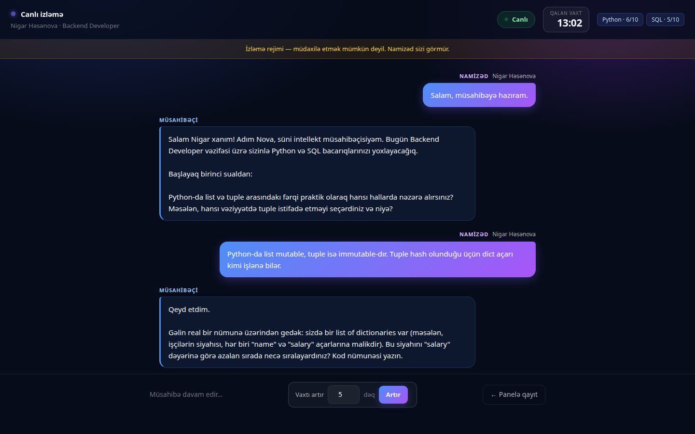
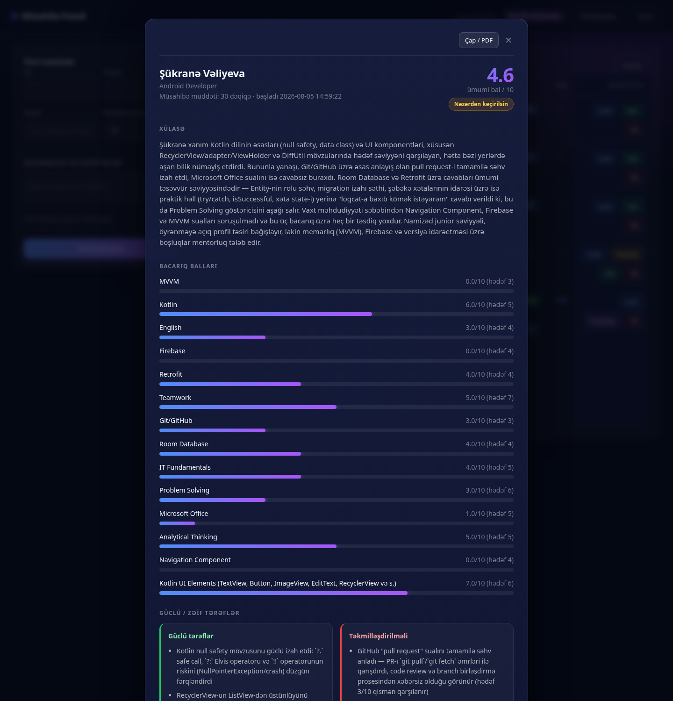
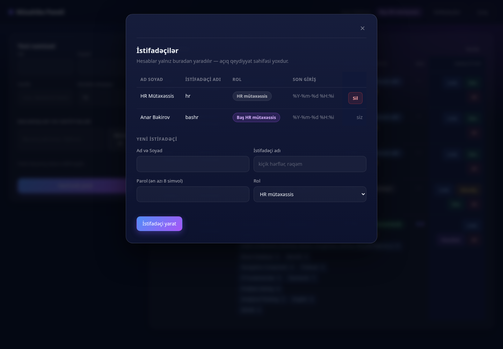

Siz namizədin yoxlanacaq bacarıqlarını və hər biri üçün 1–10 arası hədəf səviyyəni təyin edirsiniz. Sistem həmin səviyyəyə uyğun suallar verən süni intellekt müsahibəçi işə salır və sonda qiymətləndirmə hesabatı hazırlayır.
| Rol | İmkanları |
|---|---|
| HR mütəxəssis | Namizəd yaradır, link göndərir, hesabatlara baxır, PDF çıxarır, namizədi silir |
| Baş HR mütəxəssis | Yuxarıdakıların hamısı, üstəlik: davam edən müsahibəni canlı izləyir, vaxtı uzadır, istifadəçiləri idarə edir |
Brauzerdə musahibe.azerenerji.az/admin/ ünvanını açın.

İstifadəçi adı və parolu daxil edib Daxil ol düyməsini basın.
Sessiya 8 saat davam edir. Vaxtı bitəndə sistem sizi giriş səhifəsinə qaytarır.

Yuxarı sağda adınız, rolunuz və Çıxış düyməsi var. Baş HR mütəxəssisdə əlavə olaraq İstifadəçilər düyməsi görünür.
| Düymə | Nə edir | Nə vaxt görünür |
|---|---|---|
| Link | Namizədin şəxsi müsahibə linkini panoya kopyalayır | Həmişə |
| Düzəliş | Namizədin məlumatlarını dəyişir | Yalnız müsahibə başlamayıbsa |
| İzlə | Müsahibəni canlı izləyir | Yalnız Baş HR, müsahibə bitməyibsə |
| Hesabat | Qiymətləndirmə hesabatını açır | Müsahibə tamamlandıqdan sonra |
| Sil | Namizədi və bütün tarixçəsini silir | Həmişə |
| Status | Mənası |
|---|---|
| Gözləyir | Link yaradılıb, namizəd hələ açmayıb |
| Davam edir | Müsahibə gedir — izləmək mümkündür |
| Tamamlanıb | Bitib, hesabat hazırdır |
Status yanındakı 🔒 işarəsi linkin bir cihaza bağlandığını bildirir.
Backend Developer. AI sualları bu vəzifəyə
uyğunlaşdırır| Səviyyə | Sualların xarakteri |
|---|---|
| 1–3 | Başlanğıc: əsas anlayışlar, tərif, sintaksis |
| 4–6 | Orta: real iş məsələləri, tipik problemlərin həlli |
| 7–8 | Qabaqcıl: arxitektura, optimallaşdırma, kompromislər |
| 9–10 | Ekspert: miqyaslanma, təhlükəsizlik, nadir uc hallar |
Düzəliş düyməsi yalnız müsahibə başlamayıbsa görünür. Basanda soldakı forma həmin namizədin məlumatları ilə dolur — dəyişib Yadda saxla edin. Namizədin linki dəyişmir, yenidən göndərməyə ehtiyac yoxdur.
Link düyməsini basın — link avtomatik panoya kopyalanır və sağ aşağıda «Link kopyalandı» yazısı çıxır. Sonra onu namizədə istənilən kanalla göndərin.
Namizədə ötürməli olduğunuz məlumat:

Namizəd linki açan kimi AI salamlayır və birinci sualı verir. Cavab yazıb Göndər basır (və ya Enter; Shift+Enter yeni sətir açır).
Sağ yuxarıdakı geri sayım son 5 dəqiqədə sarı, son 1 dəqiqədə qırmızı olur. Vaxt bitəndə giriş sahəsi bağlanır və müsahibə avtomatik tamamlanır.
Davam edən müsahibənin yanındakı İzlə düyməsi izləmə səhifəsini yeni tabda açır.

Yazışma hər 3 saniyədə yenilənir, yeni mesaj qısa müddət vurğulanır. Yuxarıda yaşıl «Canlı» göstəricisi, namizədin taymeri və yoxlanılan bacarıqlar görünür.
Aşağıdakı «Vaxtı artır» sahəsinə dəqiqə yazıb Artır basın. Bir dəfəyə 1–60 dəqiqə əlavə edilir, ümumi müddət 180 dəqiqəni keçə bilməz.
Uzatma dərhal işə düşür: namizədin ekranındakı sayğac özü yuxarı sıçrayır, onun heç nə etməsi lazım deyil. Sayğac sıfıra çatsa belə, sistem əvvəlcə vaxtın uzadılıb-uzadılmadığını yoxlayır — yəni son saniyədə uzatsanız da müsahibə dayanmır.
Müsahibə tamamlananda hesabat avtomatik hazırlanır. Hesabat düyməsi ilə açılır.

| Bölmə | Nə göstərir |
|---|---|
| Ümumi bal | 0–10 arası yekun qiymət |
| Tövsiyə | İşə götürülür / Nəzərdən keçirilsin / Tövsiyə olunmur |
| Xülasə | Müsahibənin ətraflı təhlili |
| Bacarıq balları | Hər bacarıq üzrə bal və təyin etdiyiniz hədəflə müqayisə |
| Güclü / zəif tərəflər | Yazışmadan konkret nümunələrə əsaslanan bəndlər |
| Müsahibə yazışması | Bütün sual-cavabların tam mətni |
Hesabat pəncərəsinin yuxarısındakı Çap / PDF düyməsini basın. Brauzerin çap dialoqu açılır — «Hədəf: PDF olaraq saxla» seçib faylı yadda saxlayın.
Çap zamanı yalnız hesabat çıxır (panel və düymələr görünmür), yazışma isə tam şəkildə — ekranda sığmayan hissə də daxil olmaqla.
Yuxarıdakı İstifadəçilər düyməsi mövcud hesabları göstərir və yenisini yaratmağa imkan verir.

Yeni hesab üçün ad-soyad, istifadəçi adı, parol (ən azı 8 simvol) və rolu yazıb İstifadəçi yarat basın.
| Qayda | Səbəb |
|---|---|
| Öz hesabınızı silə bilməzsiniz | Təsadüfən panelə girişi itirməmək üçün |
| Sonuncu Baş HR silinə bilməz | Əks halda panelə bir daha heç kim istifadəçi əlavə edə bilməzdi |
| İstifadəçi adı təkrarlana bilməz | — |
Çox güman linki başqa cihazda və ya brauzerdə açıb. Müsahibəni başlatdığı cihazda davam etməlidir. Mümkün deyilsə, namizədi silib yenidən yaradın.
Müsahibə davam edirsə — Baş HR İzlə səhifəsindən vaxtı uzada bilər. Artıq bitibsə uzatmaq mümkün deyil, yeni müsahibə yaradın.
Hesabat generasiyası uğursuz olub, amma yazışma tam saxlanılıb — hesabatın altından oxuyub əl ilə qiymətləndirə bilərsiniz.
Bacarıq səviyyələrini yenidən nəzərdən keçirin. Səviyyə sualların çətinliyini birbaşa müəyyən edir.
Bacarıq sayı çoxdur. Ya müddəti artırın, ya da bacarıqların sayını azaldın — hər bacarıq üçün təxminən 2 sual verilir.
Tam qarşısını almaq mümkün deyil. Vaxt limiti bunu çətinləşdirir. Şübhə yaranarsa yazışmanı oxuyun — hazır cavablar üslubuna görə seçilir. Yekun qərardan əvvəl qısa şifahi söhbət tövsiyə olunur.